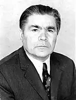

ЦЮПА Іван АнтоновичНародився 29 жовтня 1911 року в с. Бірки, (тепер Зіньківського району Полтавської області). Як письменник формувався у Краснограді, працюючи в районній газеті "Соціалістична перебудова".
Закінчив Харківський комуністичний інститут журналістики. Працював у пресі, на видавничій роботі. Часто приїздив до Краснограда. Спілкувався з працівниками редакції райгазети, учнями шкіл, студентами середніх навчальних закладів. Іван Антонович подарував багато книг районній бібліотеці і музею. Його твори користуються великою популярністю серед трудящих району.
Нагороджений орденом Дружби народів, медалями. У Івана Антоновича надзвичайно багатий літературний доробок — книжки оповідань, нарисів і повістей: "Чотири вітри", "Новели рідного краю", "Василь Сухомлинський", "Миргородська криниця" та інші романи "Брати", "Назустріч долі", "Вічний вогонь", "Через терни до зірок", "Краяни", "Мужній вершник", "Дзвони янтарного літа" та інші. В 1995 році вийшла нова книга письменника "В пазурах єжовщини", яку він, репресований та реабілітований, присвятив "світлій пам'яті незабутніх земляків моїх, розчавлених на жорнах тиранії, замучених голодомором, доведених до згуби по тюрмах і таборах, безневинно розстріляних".